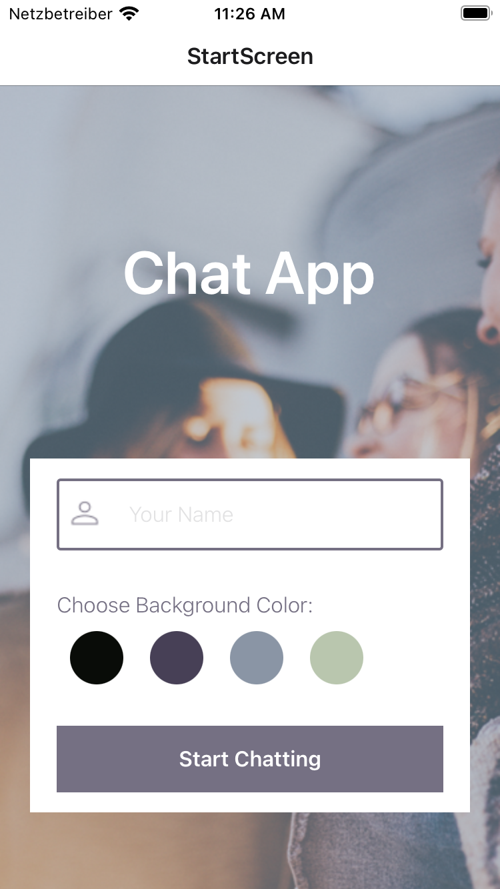
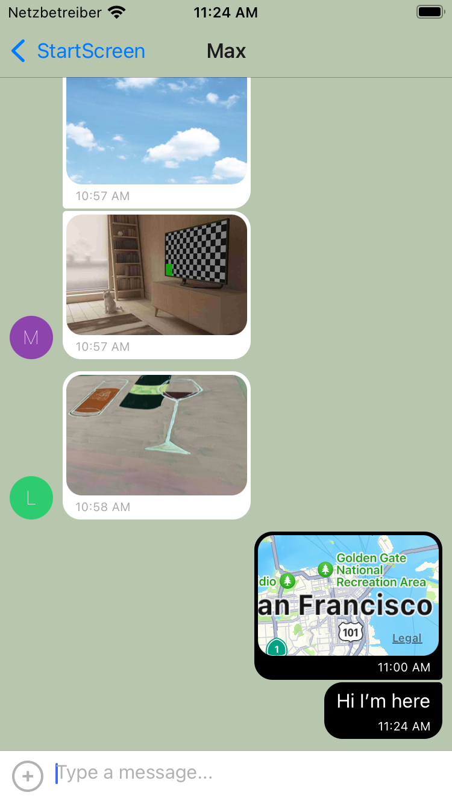
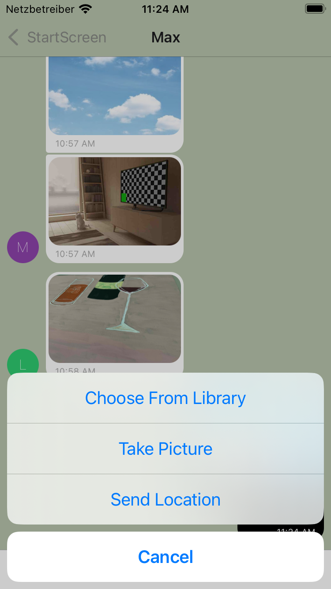

Recent Projects and Work
Meet App
This is a serverless, progressive web application (PWA) with React using a test-driven development (TDD) technique. The application uses the Google Calendar API to fetch upcoming events. The serverless provider chosen for this purpose is Amazon Web Services.
Used Tools
- React (with create-react-app)
- Serverless Architecture with AWS Lambda
- Google Calendar API Integration
- TDD: Test-driven development (Jest, Testing libaray/React)
- BDD: Behavior-driven development (Jest-cucumber, Puppeteer)
- Continuous Integration and Continuous Delivery
- Atatus
- Recharts
- Effective Version Control with Git and GitHub
Key Features
- Feature 1: Filter Events By City
- Feature 2: Show/Hide Event Details
- Feature 3: Specify Number of Events
- Feature 4: Use the App When Offline
- Feature 5: Add an App Shortcut to the Home Screen
- Feature 6: Display Charts Visualizing Event Details
 ➔ See project on GitHub
➔ See project on GitHub➔ Meet App Site
Simple JavaScript App (Pokédex)
This is a small web application build with HTML, CSS, and JavaScript that loads data from an
external API and enables the viewing of data points in detail.
The users are able to view a list of Pokémon and see more details on demand.
Key Features
- Load data from an external source (API)
- View a list of items
- On user action (e.g., by clicking on a list item), view details for that item
Movie Api
The server-side component of a “movies” web application is beeing built. The web application provides users with access to information about different movies, directors, and genres. Users are able to sign up, update their personal information, and create a list of their favorite movies.
Key Features
- Return a list of ALL movies to the user
- Return data (description, genre, director, image URL, whether it is featured or not) about a single movie by title to the user
- Return data about a genre (description) by name/title (e.g., “Thriller”)
- Return data about a director (bio, birth year, death year) by name
- Allow new users to register
- Allow users to update their user info (username, password, email, date of birth)
- Allow users to add a movie to their list of favorites
- Allow existing users to deregister
- Allow users to remove a movie from their list of favorites
➔ Movie Api Site
Myflix React App (Client-Side)
The myFlix Client-Side application is a web-based movie application built using React. It interacts with a server-side application, which provides a RESTful API for managing and retrieving movie data. The interface the users use when making requests to—and receiving responses from—the server-side is being created. The client-side of the myFlix app includes several interface views (built using the React library) that will handle data through the (previously defined) REST API endpoints.
Essential Views and Features
Main view
- Returns ALL movies to the user (each movie item with an image, title, and description)
- Filtering the list of movies with a “search” feature
- Ability to select a movie for more details
- Ability to log out
- Ability to navigate to Profile view
Single Movie view
- Returns data (description, genre, director, image) about a single movie to the user
- Allows users to add a movie to their list of favorites
Signup and Login view
- Allows new users to register (username, password, email, date of birth)
- Allows users to log in with a username and password
Profile view
- Displays user registration details
- Allows existing users to deregister
- Allows users to update their info (username, password, email, date of birth)
- Displays favorite movies
- Allows users to remove a movie from their list of favorites
MyFlix Angular App (Client-Side)
This project was generated with Angular CLI version 16.2.3. The MyFlix Angular App is a client-side application for managing and browsing movie data. It interacts with a server-side application, which provides a RESTful API for managing and retrieving movie data. It is designed to provide an intuitive and user-friendly interface for users interested in movies. The client-side of the myFlix app includes several interface views that will handle data through the (previously defined) REST API endpoints.
Essential Views and Features
Main view
- Returns a list of all movies to the user, each movie item with an image, title, and description.
- Provides a search feature to filter the list of movies.
- Allows users to select a movie for more details.
- Enables users to log out and navigate to the Profile view.
Details Movie View
- Displays detailed data (description, genre, director, image) about a single movie to the user.
- Allows users to add a movie to their list of favorites.
Signup and Login view
- Allows new users to register (username, password, email, date of birth)
- Allows users to log in with a username and password
Profile view
- Displays user registration details.
- Allows users to update their info (username, password, email, date of birth).
- Shows favorite movies and allows users to remove a movie from their favorites.
- Permits existing users to deregister.
To-Do-List App
The To Do List App is a simple web-based application that allows users to manage and organize their tasks in an easy and intuitive way. With features like adding new items, marking items as completed, deleting items, and reordering tasks, this app provides a user-friendly interface to help users keep track of their tasks efficiently.
Key Features
- Add New Items
- Mark as Completed
- Delete Items
- Reorder Tasks
Technologies Used
- HTML: The app's structure and content are built using HTML, providing the basic layout and elements.
- CSS: Styling and visual effects are achieved using CSS. The app employs CSS classes to implement the strike-through effect, deletion button, and overall visual appeal.
- JavaScript and jQuery: Interactive functionalities are implemented using JavaScript and jQuery. These scripting languages allow users to perform actions like adding, marking, and deleting tasks, as well as reordering them.
➔ To Do List App Site
React Native Mobile Chat App
The prevalence of mobile devices in daily tasks has led to the demand for efficient communication apps. This project aims to address this demand by building a native chat app using React Native, Expo, and Google Firestore Database. The app serves as a showcase of JavaScript mobile development skills and offers a platform for users to engage in seamless conversations, share images, and exchange location data.
Features and Requirements
User Stories
- As a new user, I want to be able to easily enter a chat room so I can quickly start talking to my friends and family.
- As a user, I want to be able to send messages to my friends and family members to exchange the latest news.
- As a user, I want to send images to my friends to show them what I am currently doing.
- As a user, I want to share my location with my friends to show them where I am.
- As a user, I want to be able to read my messages offline so I can reread conversations at any time.
- As a user with a visual impairment, I want to use a chat app that is compatible with a screen reader so that I can engage with a chat interface.
   ➔ See project on GitHub